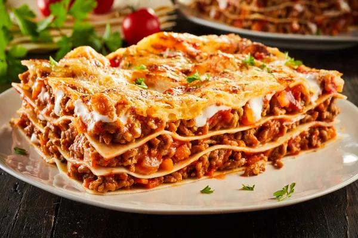

Home
Lasagna

Prepare this easy homemade lasagne ahead of time and save in the freezer, uncooked, for when you need it during a busy week.
I don't have anything further to say about lasagne. This project has asked for content related to the dish to go here.
Lasagne is pretty tasty I guess. Do you like the picture I put above? Looks tasty.
Ingredients
- Olive Oil
- 750g lean beef mince
- 90g proscuitto
- 800g passata
- 200ml hot beef stock
- Nutmeg
- 300g fresh lasagne sheets
- White sauce (shop bought or as part of the method below)
- 125g ball mozzarella torn into thin strips
Method
- To make the meat sauce, heat 2tbsp olive oil in a frying pan and cook 750g lean beef mince in two batches for about ten minutes until browned all over
- Finely chop 4 slices of proscuitto then stir through the meat mixture
- Pour over 800g passata and 200ml hot beef stock. Add a little grated nutmeg, then season
- Bring up to the boil, then simmer for 30 minutes until the sauce looks rich
- Heat the oven to 180C/160F/Gas 4 and lightly oil an ovenproof dish
- Spoon one third of the meat sauce into the dish, then cover with fresh lasagne sheets from a 300g pack.
Drizzle over roughly 130g white sauce
- Repeat until you have three layers of pasta. Cover with the remaining 390g white sauce, making sure you can't see any pasta poking through.
- Scatter 125g torn mozzarella over the top
- Arrange the rest of the proscuitto on top. Bake for 45 miutes until the top is bubbling and lightly browned
White Sauce
Lemon Garlic Pasta
Arrabbiata